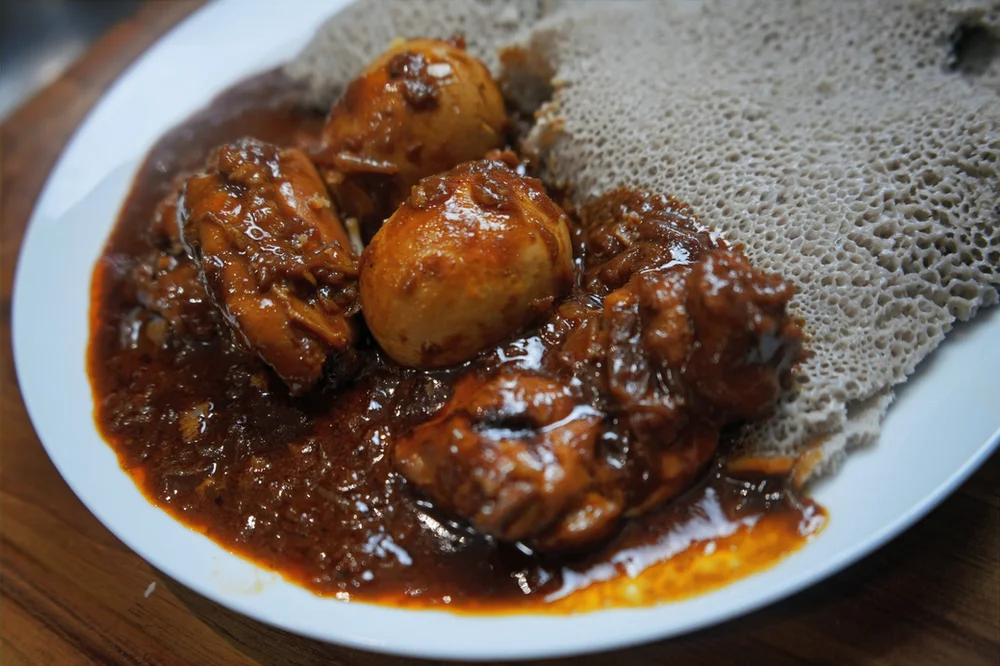

Dorowat

Doro Wat is a flavorful and spicy Ethiopian chicken stew made with a base of slow-cooked onions, spiced clarified
butter, and berbere spice mix. It’s traditionally served with injera, a spongy flatbread.
- 1 kg chicken (legs or thighs, skin removed)
- 3 large onions, finely chopped
- 4 cloves garlic, minced
- 2 tbsp berbere spice mix
- 1 tbsp tomato paste
- 1/4 cup niter kibbeh (spiced clarified butter)
- 2 boiled eggs (optional, peeled)
- Salt to taste
- In a large pot, cook the chopped onions over low heat, stirring frequently, until soft and golden (no oil
needed initially).
- Add niter kibbeh and garlic, then stir in the berbere spice mix and tomato paste. Cook for 2-3 minutes.
- Add the chicken pieces and coat them well in the spice mixture.
- Add enough water to cover the chicken, then simmer on low heat for about 30-40 minutes, stirring
occasionally.
- Add boiled eggs (if using) and season with salt. Simmer for another 5 minutes.
- Serve hot with injera or rice.